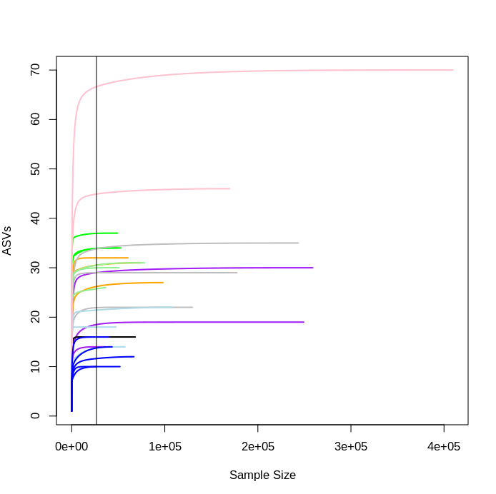
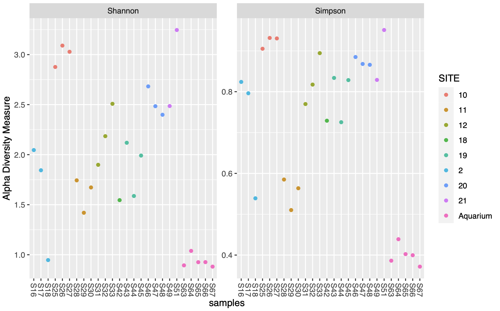
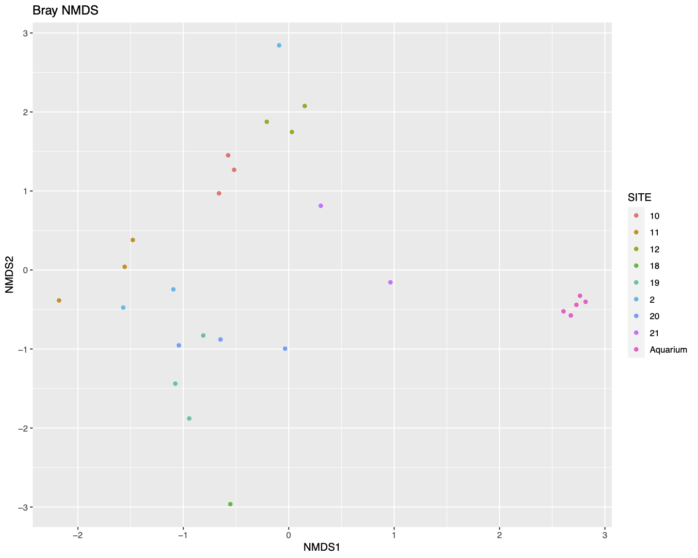
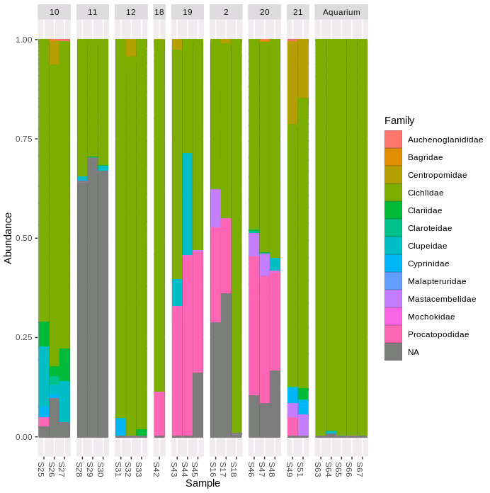

Chapter 11 Further analysis
In this section we will briefly discuss a few basic types of multivariate data analysis and data visualisation which are often used in metabarcoding studies. It is important to remember that there are several different ways to plot and analyse your data and we have presented only a few examples here. It might be that for your own data set and questions it would be better to approach your analysis in a different way.
First we will load in a table which contains the meta data.
meta<-read.csv("/pub39/tea/nsc006/NEOF/metabarcoding_workshop/sample_info.csv",
row.names = 1)Before we start we will clean up the dataset. Our negative controls seem to be mostly clean of contaminants (with only 0 and 4 reads assigned to them). We will remove these for further analysis. Here we remove rows 25 and 31 which contain the filter (S62) and extraction (S72) control samples from our ASV table and metadata table.
seqtab.rmcontrol<-seqtab.nochim[-c(25,31),]
meta.rmcontrol<-meta[-c(25,31),]If you are concerned about contaminants in your own analysis then it could be useful to explore the R package decontam which is designed to identify and filter contaminants.
We will also remove samples which appear to have failed/have very low sequence numbers in our dataset.
#Check number of sequences per sample
rowSums(seqtab.rmcontrol)
# S40, S41, S50 all have low sequence counts. So we will remove these rows.
seqtab.rmlow<-seqtab.rmcontrol[-c(13,14,23),]
meta.rmlow<-meta.rmcontrol[-c(13,14,23),]
# Print the minimum sequence number in one sample.
min(rowSums(seqtab.rmlow))
# The lowest number of sequences in one sample is now 26667.11.1 R packages for further analysis
We will use three more handy R packages in order to further explore our data, phyloseq and vegan to explore the diverity in our data, plus the visualisation package ggplot2 for graphics. Load these libraries before proceeding with the steps below.
library(phyloseq)
library(vegan)
library(ggplot2)11.2 Rarefaction curves
The more deeply we sequence a sample the more species we discover, until this accumulation levels off as we have found all or as many ASVs/species as we are going to find. This becomes a problem as samples are often sequenced at different depths so will have reached different points in the curve. This is a common difficulty as pooling and sequencing equal amounts of each sample can be tricky.
One way to visualise this is to plot a rarefaction curve for each sample.
rarecurve(seqtab.rmlow, step=100, col=meta.rmlow$COLOUR, lwd=2, ylab="ASVs", label=F)
# add a vertical line to represent the fewest sequences in any sample
abline(v=(min(rowSums(seqtab.rmlow))))
You can see that each sample levels off at a different sequencing depth and each sample has been sequenced at different depths. This also gives us an indication of how many ASVs are in each sample, with the aquarium samples here (dark blue lines) amongst the least diverse, as we’d expect.
Rarefaction is one of the common approaches people use to correct for differences in library sequencing depth between samples and was originally proposed for traditional ecological studies (Sanders 1968). It involves randomly removing reads until you reach a number often equal to or less than the number of reads in the smallest sample. Random subsampling can result in a loss of data and generate artificial variation. Due to these concerns other methods of transformation have been suggested.
Other methods of normalisation include normalising counts as a proportion of the total library size (McMurdie and Holmes 2014), centered log-ratio transformations (Gloor et al. 2017), geometric mean pairwise ratios (Chen et al. 2018), and also variance stabilising transformations and relative log expressions (Badri et al. 2018).
Choosing the type of normalisation method to use for your own dataset is not trivial and the most appropriate method can vary between studies and datasets. Further reading is recommended. A couple of papers to get you started are listed below:
11.3 Alpha diversity
Measures of alpha diversity are used to describe diversity within a sample.
We will use the R package phyloseq to plot alpha diversity. For this example we will proceed with unnormalised data. It is generally recommended not to normalise count data before calculating alpha diversity measures in the phyloseq FAQ.
First make a phyloseq object. To do this we first read in our ASV, taxonomy and metadata tables before making the plyloseq object phylo.
seqtab.rmlow2<-t(as.data.frame(seqtab.rmlow))
phylo_asv <- otu_table(seqtab.rmlow2, taxa_are_rows=TRUE)
phylo_tax <- tax_table(taxa)
phylo_samples <- sample_data(meta.rmlow)
phylo <- phyloseq(phylo_asv, phylo_tax, phylo_samples)
sample_names(phylo)
rank_names(phylo)
sample_variables(phylo) The two alpha diversity metrics we will plot are:
1. Shannon’s diversity index
A measure of diversity where a higher number means higher diversity. Shannon’s index accounts for the abundance and evenness of the features present. If richness and evenness increase the diversity score increases. Values can range from one (in case of a single dominant species) to the total number of all species (in case of all species having equal abundance).
Equation:
\[ H = -\sum_{i=1}^{S} p_i lnp_i \]
- H = Shannon diversity index
- pi = is the proportion of species i
- S = Number of species
2. Simpson diversity index A measure of diversity based on number of features present and the relative abundance of each feature. If richness and evenness increase the diversity score increases. The values range from 0 (no diversity) to 1 (infinite diversity).
Equation: \[ D = 1 - {\sum_{i=1}^{S} {p_i} ^{2}} \]
- D = Simpson diversity index
- pi = is the proportion of species i
- S = Number of species
Plot the two methods of calculating alpha diversity.
plot_richness(phylo,
measures=c("Shannon", "Simpson"),
color = "SITE")
plot_richness(phylo, x="SITE", measures=c("Shannon", "Simpson"),
color = "SITE") + geom_boxplot()

The first figure plots the diversity measure per sample and colours the output by site. The second figure combines the replicates to plot as a boxplot.
11.4 Beta diversity
Beta diversity compares the difference in diversity between two sites, or to put it another way it calculates the number of species that are not the same in the two sites.
We will normalise the data before running the beta diversity calculation. We will transform the data into proportions to be used for Bray-Curtis distances.
ps.prop <- transform_sample_counts(phylo, function(otu) otu/sum(otu))We then generate and plot the NMDS (Non-metric MultiDimenstional Scaling) using Bray-Curtis distances.
Equation: \[ d_jk = \sum\frac{|x_{ij}-x_{ik}|} {(x_{ij}+x_{ik})} \]
ord.nmds.bray <- ordinate(ps.prop, method="NMDS", distance="bray")
plot_ordination(ps.prop, ord.nmds.bray, color="SITE", title="Bray NMDS")
In general the samples do seem to cluster roughly by site in the NMDS plot.
We will then calculate the Bray–Curtis distances using the distance function and perform a PERMANOVA (permutational multivariate analysis of variance) using the adonis function from Vegan to check whether the separation of samples by site is significantly different.
bray.dist<-distance(ps.prop, method="bray")
sampledf <- data.frame(sample_data(phylo))
adonis(bray.dist ~ SITE, data = sampledf)The PERMANOVA results suggest that there is a statistical difference in communities between sites.
Lastly, let’s plot the proportion of ASV sequences within each sample that belong to different taxonomic families.
plot_bar(ps.prop, fill = "Family")+
geom_bar(aes(color=Family, fill=Family), stat="identity", position="stack")+
facet_grid(~SITE, scales = "free", space = "free")
We can see that the five aquarium samples contain mostly Cichlidae sequences, apart from a very small number of unassigned (NA) and misassigned (there were only cichlid fish in the aquarium) sequences. Site 11 has more than 50% unassigned sequences in all three replicate samples. All of the samples containing > 10% Procatopodidae sequences are grouped together in the NMDS plot (especially sites 19 & 20, but also two samples from site 2, and the one sample from site 18), suggesting this may be in part driving the observed patterns of community similarity.